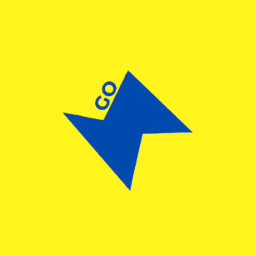

Introduction

Student @ Gurukul The School | Keen Tech Enthusiast | Creative Innovator | Sustainability Advocate | Building Future-Ready Ideas | Learner. Maker. Changemaker.
TARANG KATIYAR
Delhi, India
I believe in learning as an ongoing journey, where each step leads to personal growth and the ability to make a positive impact. Right now, I'm deeply focused on how technology can address real-world challenges, help communities evolve, and drive the development of a sustainable future.
1. Tech Enthusiast & Innovator
My passion for technology drives me to explore diverse fields — from web development to VFX, GFX, and videography. I enjoy discovering how tech can solve practical problems and bring creative ideas to life. I'm particularly drawn to sustainability and constantly thinking of innovative ways to harness technology for eco-friendly solutions.
2. Sustainability Advocate
I'm committed to creating solutions that not only improve lives but also benefit the planet. Whether through tech projects, environmental initiatives, or innovative ideas, my goal is to contribute to a more sustainable future. I believe that technology is a powerful tool for change, and I am always looking for ways to use it to create a lasting positive impact on our environment.
3. Problem Solver & Critical Thinker
The time I've spent working with STEM concepts has shaped my approach to problem-solving. I apply analytical thinking to real-world issues, and my exposure to design thinking pushes me to approach challenges from creative and alternative perspectives. This mindset nurtures both my innovation and resilience.
4. Committed to Community Impact
In addition to my passion for technology and sustainability, I'm dedicated to giving back to my community. Through various initiatives, I'm working to raise awareness around important social causes and help others. I'm always eager to collaborate with like-minded individuals and explore how we can work together for a better future.
5. Holistic Approach to Growth
Outside of tech, I engage in activities that nurture both my body and mind. From cricket and badminton to running and cycling, I believe in a well-rounded approach to personal development. Participating in design competitions has also helped me hone my creativity and problem-solving skills.
Experience
PROFESSIONAL EXPERIENCE
Professional journey and key accomplishments
.jpeg)
Gurukul The School (Official)
Currently ActiveClass Representative
Gurukul The School (Official)
(4 months)
As the Class Representative at Gurukul The School, I acted as a bridge between students and teachers, ensuring clear communication and smooth coordination. I represented my class in meetings, voiced concerns, and shared important updates while assisting in organizing academic activities.
Sustainability Club Member
Gurukul The School (Official)
(5 months)
As an active member of the Sustainability Club at Gurukul The School, I've had the opportunity to explore how small actions can make a big difference in building a greener future. Collaborated with peers on projects that encouraged sustainable practices and innovative solutions.
Gurukul The School (Official)
Past PositionsAdministration (Admission Drive)
Gurukul The School (Official)
(7 months)
Contributed to the school's admission process by supporting administrative tasks and helping streamline the admission drive operations.
Tech Club Member
Gurukul The School (Official)
(2 years 1 month)
Explored and expanded skills in game creation, video editing, and creative software tools. Learned to design interactive games using Sandbox and gained hands-on experience with Filmora for video editing projects.
Academic Class Representative
Gurukul The School (Official)
(11 months)
Facilitated communication between students and faculty on academic matters. Coordinated assignment deadlines, shared curriculum updates, and conveyed feedback to teachers while ensuring clarity for classmates.
Google Cloud Skills Boost
Completed ProgramGoogle Arcade Lab Player
Google Cloud Skills Boost
(5 months)
Gained practical experience with core Google Cloud Platform (GCP) services including Compute Engine, Cloud Storage, and AI/ML tools. Worked on real-world tasks that challenged me to optimize workflows and scale solutions using cloud-native technologies.

GoSharpener
Climate AdvocacyProMotivator
GoSharpener
(1 year 1 month)
Actively encouraged individuals—especially youth—to embrace sustainable habits and rethink their relationship with nature. Led conversations and shared actionable tips to inspire environmentally conscious choices in daily life.
Awards
AWARDS & RECOGNITION
Notable achievements and recognitions received
Design Championship Nationals Coding - 2023
ICT360
First position in the National Design Championship for Coding category, demonstrating exceptional programming skills and innovative problem-solving abilities.
Design Championship Nationals Web Design - 2023
ICT360
First position in the National Design Championship for Web Design category, showcasing exceptional design skills and user experience expertise.
Design Championship Nationals Web Design 2022
ICT360
First position in the National Design Championship for Web Design category, demonstrating consistent excellence in web development and design.
Design Championship Regional Coding - 2024
ICT360
First position in the Regional Design Championship for Coding category, showcasing advanced programming skills and algorithmic thinking.
INFINITUS 2025 - Webpage Weaver
Delhi Public School Meerut Road
First position in the INFINITUS 2025 Webpage Weaver competition, demonstrating excellence in modern web development techniques and creative design.
KECHNOVATION - Brand Design
Khaitan Public School
First position in KECHNOVATION Brand Design competition, showcasing exceptional creative skills in brand identity and visual communication.
KECHNOVATION 2025 - Video Editing
Khaitan Public School
First position in KECHNOVATION 2025 Video Editing competition, demonstrating advanced video production and post-production skills.
SPARDHA - 4x100 Relay Race
Gurukul The School
First position in SPARDHA 4x100 Relay Race, showcasing teamwork, speed, and athletic excellence in inter-school competition.
Startup Conclave : Pitch-a-thon
Shaheed Bhagat Singh College (Evening)
First position in the Startup Conclave Pitch-a-thon, demonstrating exceptional entrepreneurial skills and innovative business ideas.
Volunteering
VOLUNTEER EXPERIENCE
Community involvement and social impact initiatives
Student Volunteer
GoSharpener
Active student volunteer contributing to sustainability initiatives and environmental awareness programs. Participating in projects that promote eco-friendly practices and community engagement for environmental stewardship.
Marketing Volunteer
Utthan India
Marketing volunteer supporting Utthan India's environmental initiatives and community outreach programs. Contributing to digital marketing campaigns and content creation to raise awareness about environmental issues and sustainable practices.
Certifications
PROFESSIONAL CERTIFICATIONS
Verified credentials and technical qualifications
Course Completion Web Development
Udemy
Comprehensive web development course completion certificate demonstrating proficiency in modern web technologies and development practices.
Course Completion On Front End Web Development
EDUCBA
Front-end web development course completion certificate covering HTML, CSS, JavaScript, and modern front-end frameworks and libraries.
Cyber Security and Ethical Hacking Training
Edureka
Comprehensive training certificate in cybersecurity and ethical hacking, covering security fundamentals, penetration testing, and ethical hacking methodologies.
Digital Transformation with Google Cloud
Google Cloud Training Online
Credential ID: JPAASU7FR3B3
Professional certification demonstrating understanding of digital transformation concepts and Google Cloud Platform services for modern business solutions.
ProMotivator
GoSharpener
Certification recognizing successful completion of the ProMotivator program, demonstrating skills in environmental advocacy, community engagement, and sustainability promotion.
Projects
FEATURED PROJECTS
Showcase of innovative solutions and technical expertise
AI and IoT Based Glove Monitoring System
Innovation Development
I have developed a Smart Hygiene Monitoring Glove that promotes safe food preparation and transparency in restaurants. Unlike traditional disposable gloves, this glove is reusable, eco-friendly, and capable of tracking hygiene practices in real time. It ensures that food handlers maintain proper hygiene, and the system shares compliance ratings with restaurant owners, authorities, and even customers. This innovation aims to reduce foodborne illnesses, build public trust, and support national missions like Swachh Bharat, Digital India, and Viksit Bharat 2047 by creating a cleaner, healthier, and more accountable food ecosystem.
Auditorium Seat Booking System
Full-Stack Development
Developed a real-time seat management platform that assigns unique, verifiable seat numbers to parents, authenticated at entry by security staff to ensure smooth and secure access. The system features dynamic seat mapping with concurrency control, preventing double bookings and reducing congestion during high-traffic events. Beyond allocation, the platform fosters collaboration across administration, faculty, parents, and security through an integrated ecosystem. With automated notifications and a responsive, user-friendly interface, communication and operational workflows were significantly streamlined. This scalable, mission-critical solution highlights my ability to engineer systems that optimize event logistics while ensuring efficiency, transparency, and stakeholder coordination in complex environments.
FitPlan: AI-Driven Personalized Wellness Ecosystem
AI/ML Development
Designed and built FitPlan, an intelligent wellness platform that leverages natural language processing (NLP) and machine learning to translate user inputs and contextual cues into tailored nutrition, fitness, and progress roadmaps. Unlike static fitness apps, FitPlan evolves continuously—adapting to users' changing goals, biometric data, and lifestyle feedback. By blending AI-powered analytics with localized health insights, the platform delivers strategies that are not only scientifically optimized but also culturally relevant to India's diverse population. FitPlan demonstrates how technology can be harnessed to create scalable, impactful solutions at the intersection of healthcare, technology, and personalization.